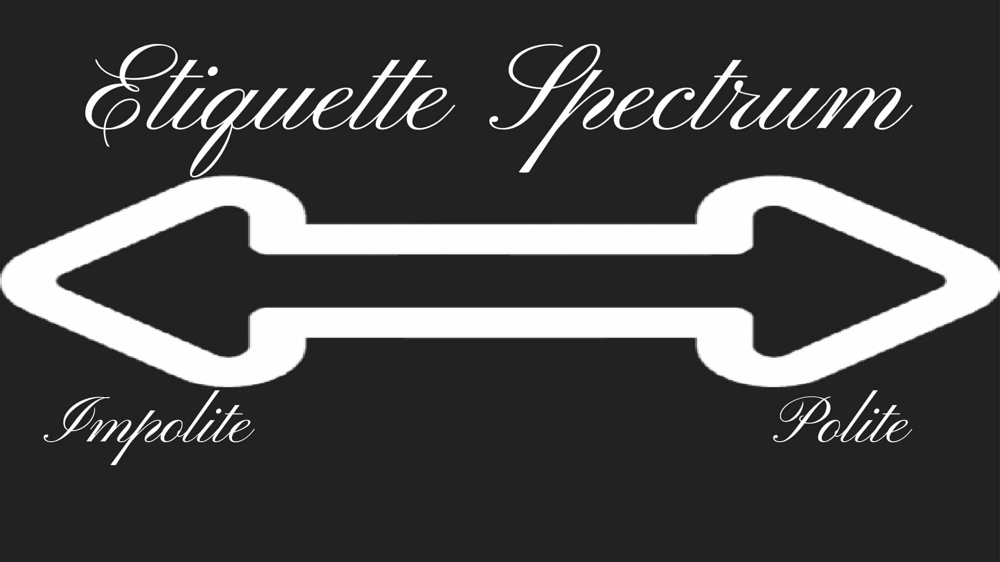
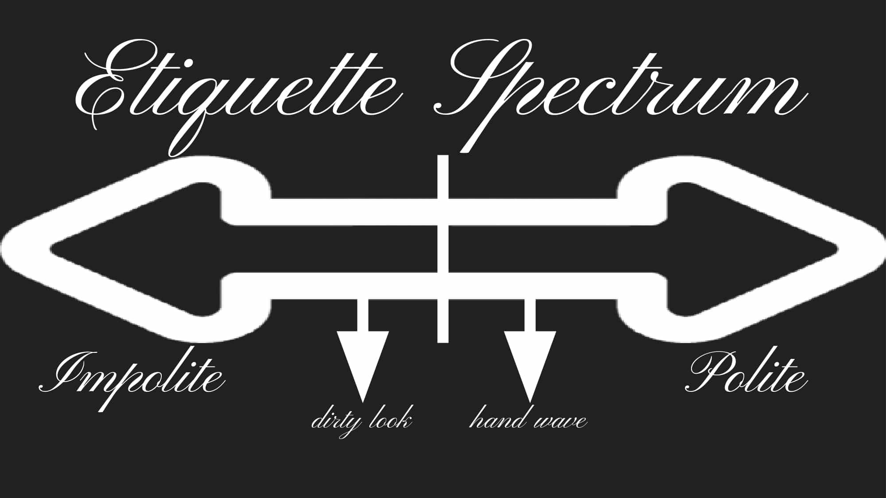
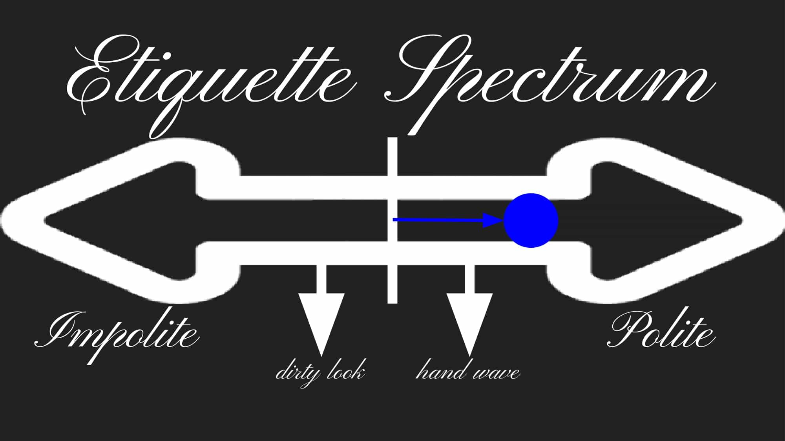
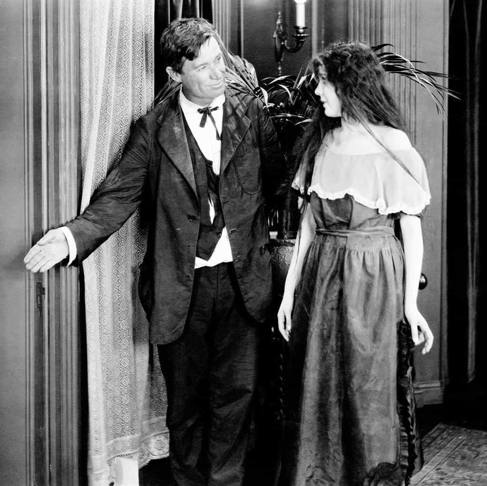

Return of King's neighborhood Confederate sympathizer, John is a young follower of Christ in his twenties working to revive the art of the Western gentleman in the end times. You can visit his YouTube channel for more content.


Chivalric courtesy was the one most important factor in creating and maintaining the strong patriarchal order of Western Civilization that its wise men today are so nostalgic of. How is that possible, you ask? Isn’t courtesy about serving and giving copious amounts of attention to women? And hasn’t such behavior led to and maintained the evil and degenerate matriarchal order The West faces today?
According to the Oxford Pocket Dictionary of Current English, courtesy, specifically its form that pertains to this discussion, is defined as “the showing of politeness in one’s attitude and behavior toward others.” The dictionary further defines politeness as “behavior that is respectful and considerate of other people.”
The same dictionary defines respect as “a feeling of deep admiration for someone or something elicited by their abilities, qualities, or achievements,” and consideration as “careful thought, typically over a period of time.” Thus essentially, courtesy can be defined as “the showing of a feeling of deep admiration for someone or something elicited by their abilities, qualities, or achievements, and careful thought, typically over a period of time, in one’s attitude and behavior toward others.”
One of the most effective lies the left has pushed in order to disassemble the natural patriarchal order has been the idea that every human being is deserving of respect. In reality, it is only deserved when a person has “abilities, qualities, or achievements.”
A truly chivalrous Western man has the ability—no, the obligation, if his duty is to keep Western society intact—to properly discern who deserves respect and therefore courtesy, and how much at that.
We will start with what can be called the “etiquette spectrum.” The more respect you deem someone deserves, the more to the right you place them.
When considering the actions to take to express the amount of respect decided upon, it is more than helpful to have a strong understanding of what makes proper etiquette. The right end of the spectrum represents polite, and the left impolite.

A man places gestures both polite and impolite on the spectrum. As a general rule, the more out of your way you have to go for a gesture of courtesy, the further away from the origin it belongs. Gestures of courtesy convey respect—or disrespect—simply because it is acknowledged that one must go out of his way to make them. They take effort and consideration, and that means something.

To choose the proper actions to show the decided amount of respect, the man looks at the placement of the person in question with relation to the actions on the spectrum. Proper etiquette would call for the man to treat him with all actions as they become applicable from the person’s level all the way to the origin. This means the more right on the spectrum a person is, the more polite etiquette the man treats him with, but it also means that if the person is on the left side, the man is obligated to treat him impolitely.

Did you think being courteous meant treating everyone politely regardless? If so, you were still under the influence of leftist brainwashing.
In the past, people took for granted that the average man and woman were decent fellows, worthy of the common handshake or the tip of the hat. One could safely assume that it was correct to treat the random person on the street with a modicum of respect.

But, thanks to the spoiled, lazy and degenerated Baby Boomer Generation, this time has passed. More likely than not, when you meet a woman on the street, she lost her virginity by the age of sixteen and kept fornicating until she lost her soul, and if that isn’t the case, nine times out of ten it’s because the woman’s natural habitat is in fact the ocean with her fellow whale brethren.
Today, truly chivalrous men will actually find themselves being impolite in many cases. This expresses to society that you are not okay with its degenerate behavior. It will make it difficult for you to become friends with everyone you meet, but those who do stick around will respect you much more for sticking to your values. In fact, proper courtesy is a good way of weeding out toxic people in your life. We are the mean of the people we associate with, so if courtesy keeps degenerates, then we are better men for it.
We, as Western men, face an epidemic of whorish, entitled, and masculine women. This point was largely reached because the baby boomer generation started a trend of “not judging” others, and thus treating everyone with the same, communist level of respect. Women who slept around and developed masculine traits, for example, stopped facing condemnation through impoliteness, and thus became the degenerate, disgusting amalgamations of used up sex vessels they are today. It truly is a shame.
But I propose a solution. As the red pill teaches, as men desire sex, women desire attention. And, as the man desires to obtain sex from the prettiest woman, the woman desires to obtain attention from the highest value male. Reaching a level of high value is done by simply improving oneself.
If you are an individual of high value, you can begin to train the women around you. Women will vie for your attention. Instead of trying to get laid and playing to their perverted fantasies, as most high-value red pillers do, maintain your dignity and develop courtesy. Take pride in yourself, and don’t settle for the common slop the West now tries to pass off as “ladies.”

Smile at the woman you know is traditionally feminine, but stop going out of your way to hold the door for the marshmallow monster who has trouble traversing the coffee shop in less than twenty minutes, and give the woman passing underwear off as a pair of pants a dirty look. Women respond to subtle social cues, as they care much more about their social standing than do men. While receiving a dirty look is not a huge deal to you, it is enough to ruin a woman’s day—especially the contemporary woman’s, who is used to having males fight over the chance to serve her.
Stop forcing a smile when in the presence of a homosexual. Stop acting as though a Muhammadan is your fellow man. Let the land whales and whores know who they are. Treat only respectable women with respect. Be courteous—more specifically, be Alt-Courteous.
Read more: Why Chivalry Is Dead